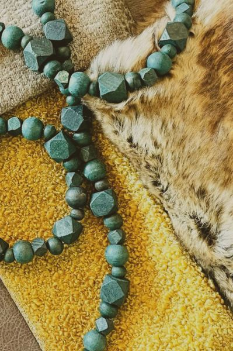

01 About Me
My path into UX started in physical space — designing interiors and cross-cultural showrooms where every decision had real, tangible consequences.
Today I bring that same structural thinking to digital products. I care about clarity, emotional comfort, and practical systems that support real human needs.
